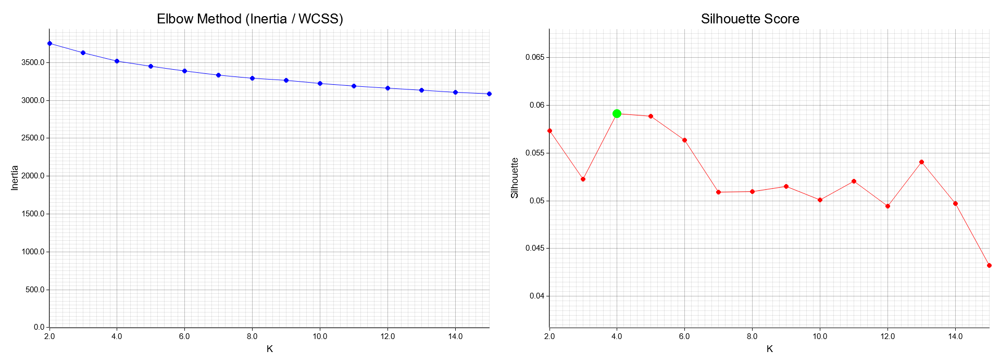
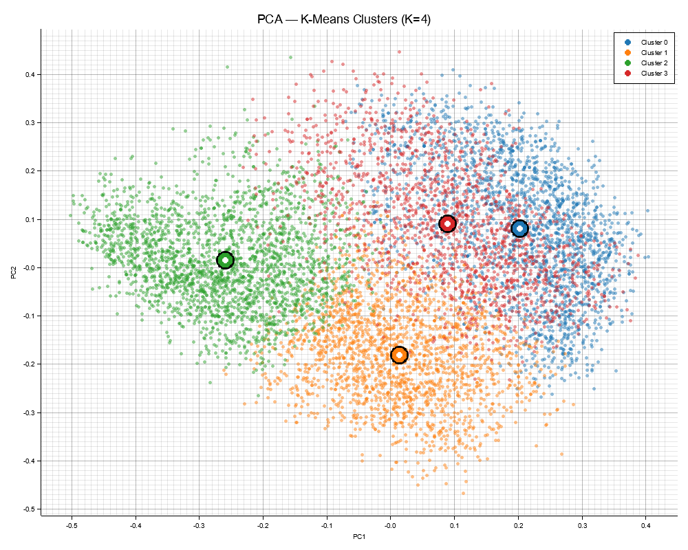
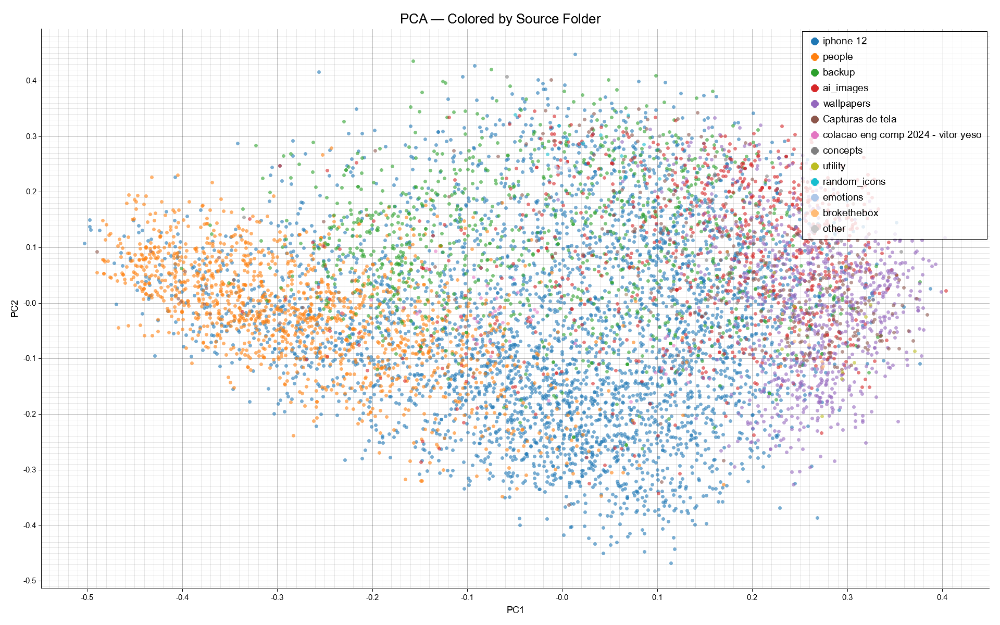
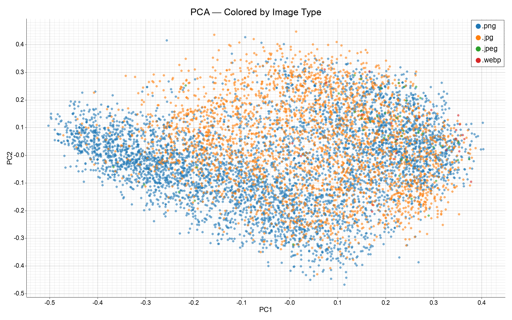
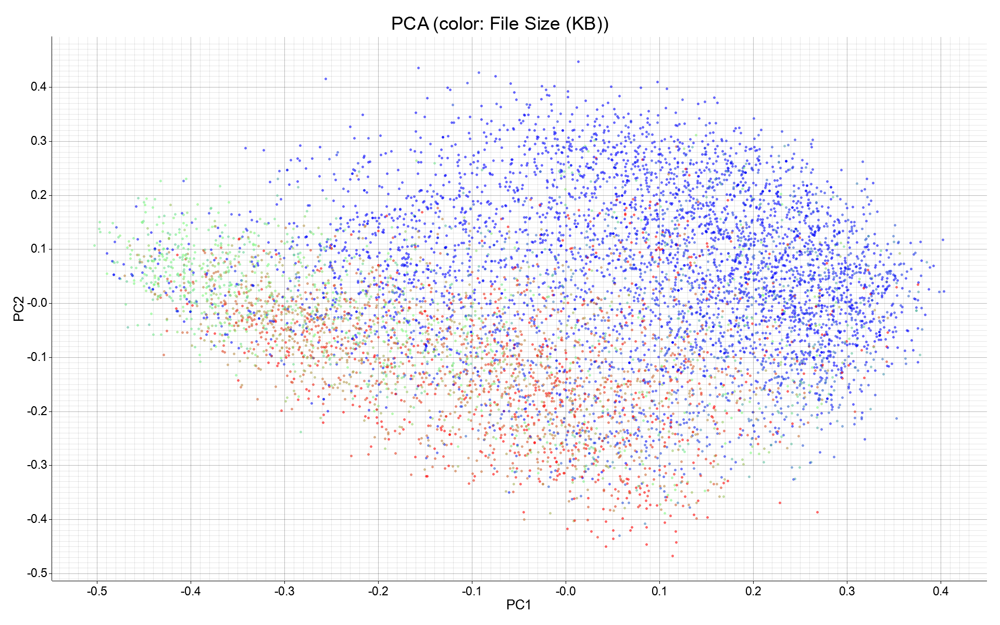
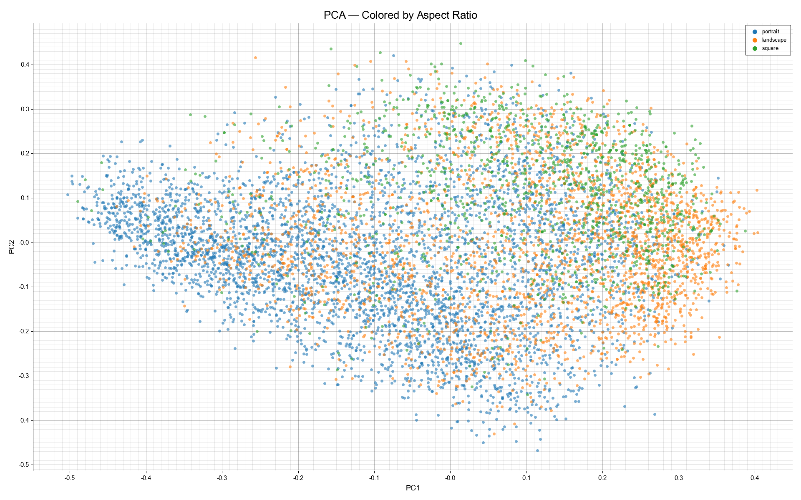

Clustering nao-supervisionado via CLIP ViT-B/32
100% Rust CLIP ViT-B/32 K-Means
Vitor Yeso — Mini-Projeto 1 — Mestrado 2026
| K | WCSS | Silhouette |
|---|---|---|
| 2 | 3753.7 | 0.0559 |
| 3 | 3627.7 | 0.0511 |
| 4 | 3520.9 | 0.0576 |
| 5 | 3454.1 | 0.0558 |
| 8 | 3290.3 | 0.0488 |
| 15 | 3087.1 | 0.0554 |

Eixo esq.: WCSS (inercia) | Eixo dir.: Silhouette Score medio | Melhor K = 4
| Cluster | N | % | Descricao | Top Folders | Orientacao | Tam. Med. |
|---|---|---|---|---|---|---|
| 0 | 2125 | 26.6 | Arte digital / wallpapers | wallpapers 35%, ai_images 32% | 46% land, 43% sq | 413 KB |
| 1 | 1972 | 24.6 | Cenas e ambientes | iPhone 81%, people 8% | 70% portrait | 8.5 MB |
| 2 | 2301 | 28.8 | Retratos / pessoas | people 50%, iPhone 33% | 75% portrait | 5.9 MB |
| 3 | 1602 | 20.0 | Screenshots / texto | iPhone 57%, backup 28% | 55% port, 36% land | 241 KB |

Circulos pretos = centroides projetados no espaco PCA

Fotos de iPhone distribuidas por todos os clusters → agrupamento semantico, nao por fonte

Formato de arquivo nao influencia a formacao dos clusters

Correlacao parcial: screenshots menores, fotos maiores (consequencia, nao causa)

Forte correlacao semantica: retratos → portrait, wallpapers → landscape/square
[1] Radford, A. et al. Learning Transferable Visual Models From Natural Language Supervision. ICML, 2021.
[2] MacQueen, J. Some methods for classification and analysis of multivariate observations. Berkeley Symp., 1967.
[3] Rousseeuw, P. Silhouettes: A graphical aid to the interpretation and validation of cluster analysis. J. Comput. Appl. Math., 1987.
Codigo-fonte: github.com/vitoryeso/machine-learning-master-class